Hi, I'm Aashray and I do
Senior Product Designer with 5 years building AI-powered enterprise products. I go on-ground with real users and design the simplest thing that actually solves the problem.
AI SaaS · Lead Designer · 2024-25
Led end-to-end design of an AI document intelligence platform for construction teams. Solo designer from research to delivery.
Construction SaaS · 5 Years · USA
Designed the entire platform from scratch. 4 years embedded with construction teams across India and the USA.
Healthcare · AI · IoT · Mobile · 2020
Wearable vest with ML-powered lung disease detection. No company. No brief. Just a real problem and a working solution.
Senior Product Designer - AI and Design Systems
Inncircles Technologies
Aug 2023 - Present
Designed InnDoc AI, a full AI document intelligence platform. Built the Shadcn design system from scratch. Only designer selected to fly to the US and onboard $500M+ enterprise clients.
User Researcher
Startoon Labs
Apr - Jun 2021, Secunderabad
On-ground interviews with physiotherapists and patients. Created personas, journey maps, and affinity diagrams to guide product design.
Research Collaborator
DSI Technologies, Japan
Jan - Feb 2021, Hiroshima Prefecture
Collaborated on the India-Japan Road to Shine human-centered innovation program. Represented India at T-Hub and Hiroshima.
Innovator (Internship)
Telangana State Council of Science and Technology
May - Aug 2020, Hyderabad
Designed the Covid-19 Diagnostic System, published in the Indian Patent Office Journal 32/2020. Received government recognition from Telangana State.
I start with the human, not the brief. I get as close to the real user as possible - field interviews, on-site observation, direct conversation. Then I find the simplest solution that genuinely works. Not the most impressive one. From there: wireframes, iteration, high-fidelity - staying connected to the user throughout.
AI products fail when users do not trust them. I make AI feel predictable and honest - not magical. I have designed for construction teams who are deeply skeptical of technology. That taught me to surface AI outputs clearly, give users control, and never hide uncertainty behind a clean UI.
I have researched users who have never spoken to a computer - construction workers on US job sites, respiratory patients in rural India, physiotherapy patients in Secunderabad. Their behavior is in no dataset. Understanding them required physical presence, trust, and time. That is different from running a usability test.
Figma for design. Shadcn UI for design systems. UX Pilot and Claude for AI-assisted workflows. Adobe Creative Suite and Canva for marketing. Jira, Confluence, and Notion for collaboration.
Open to Senior Product Designer roles. Hyderabad · Hybrid · Remote.
Contact MeEnd-to-end design of an AI document intelligence platform - reducing contract review time by 70% and doubling delivery speed. Solo designer, from research to launch.
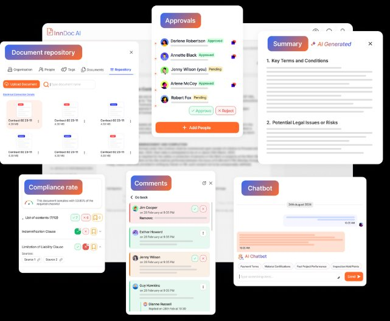
2 years of embedded experience with construction back-office teams before this project. Focused interviews on document workflows. Key finding: 80% of the friction was in reading, not writing.
Summarize, Translate, Compare, and Checkpoints accessible at any point. No hidden features. The sidebar stays open because the user should never have to think about how to access AI.
AI generates a compliance risk score based on custom checklists. Users see it immediately on open. In construction, you need to know the risk before you start reading.
Users saved frequent AI queries as reusable templates. One of the biggest workflow wins discovered through user research.
Drafting to Internal Review to Compliance Validation to Approval. All within the same screen. No email chains. No context switching.
Every empty state communicates what AI will do next.In a high-stakes industry, trust is the product.
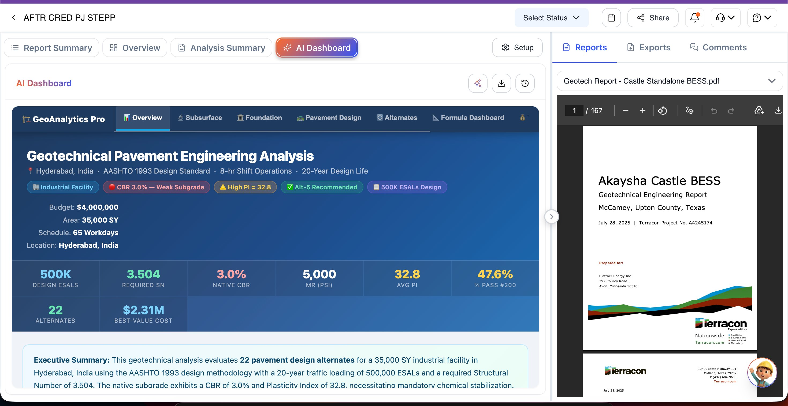
Contract Document + Prompt Library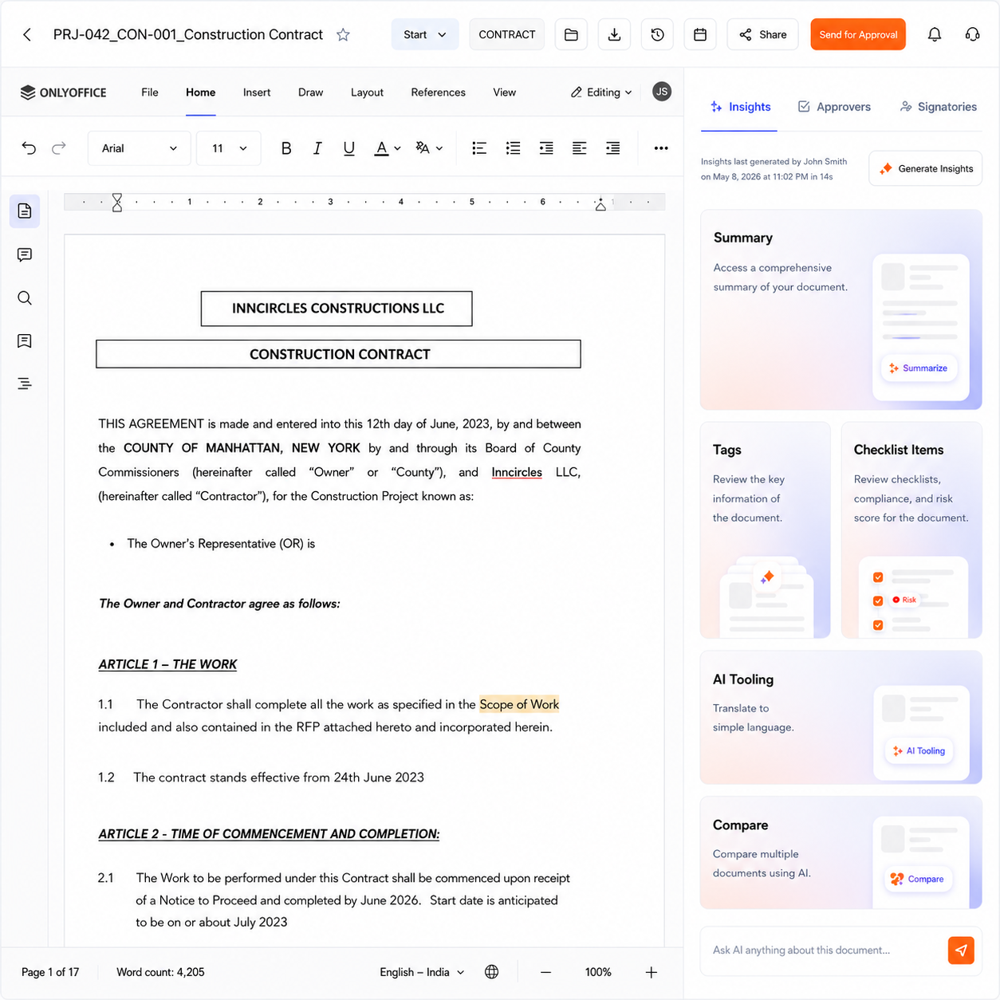
Contract Document View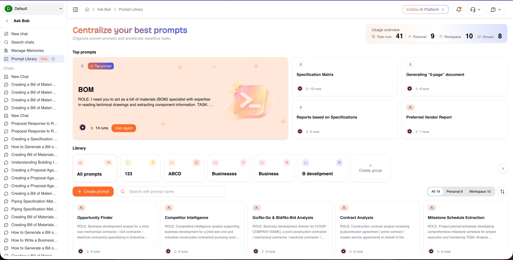
Prompt Library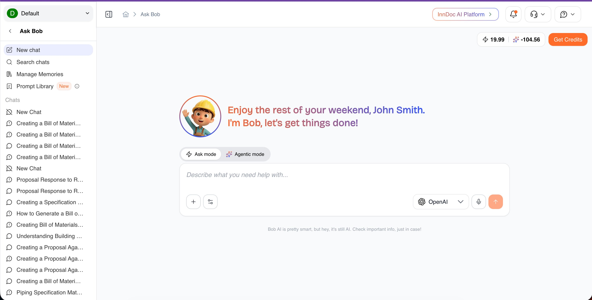
AI Chatbot InterfaceReflections
In a high-stakes industry, trust is the product. As AI capabilities grow, so does the responsibility to make them interpretable. My next step for InnDoc is agentic AI with confidence scoring - giving users outputs they can act on with complete confidence.
Designed the entire Inncircles platform over 5 years - 1000+ screens, a full design system, and a mobile-first field app. The only designer selected to fly to the US and onboard $500M+ enterprise clients.
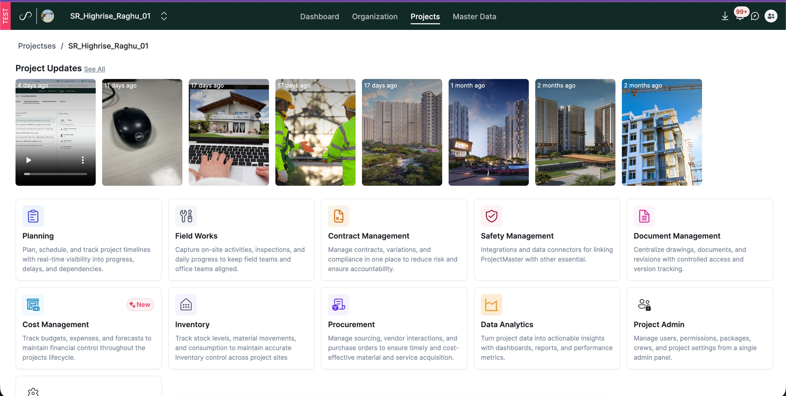
On US job sites, field workers needed interfaces that were slower, clearer, fewer decisions per screen. Gloves on. Sun in their eyes. High distraction. One primary action per screen. Tap-and-submit over form entry. Daily work log submissions went from inconsistent to near-100% compliance.
Replaced form input with button-based selection. A simple form became the most important feature for field workers.The work log button-to-tap transformation was not a design decision. It was a human insight that became one.
Token architecture: Primitive to Global to Semantic. 25+ components rebuilt with full variant coverage. Referenced Atlassian, Shopify, Razorpay, Salesforce. Result: 30% reduction in screen design time. 35% faster dev handoffs.
Bridge between construction clients and engineering in India. Managed requirements, translated client needs into dev-ready specs. Only person from the company selected to fly to the US for enterprise onboarding.
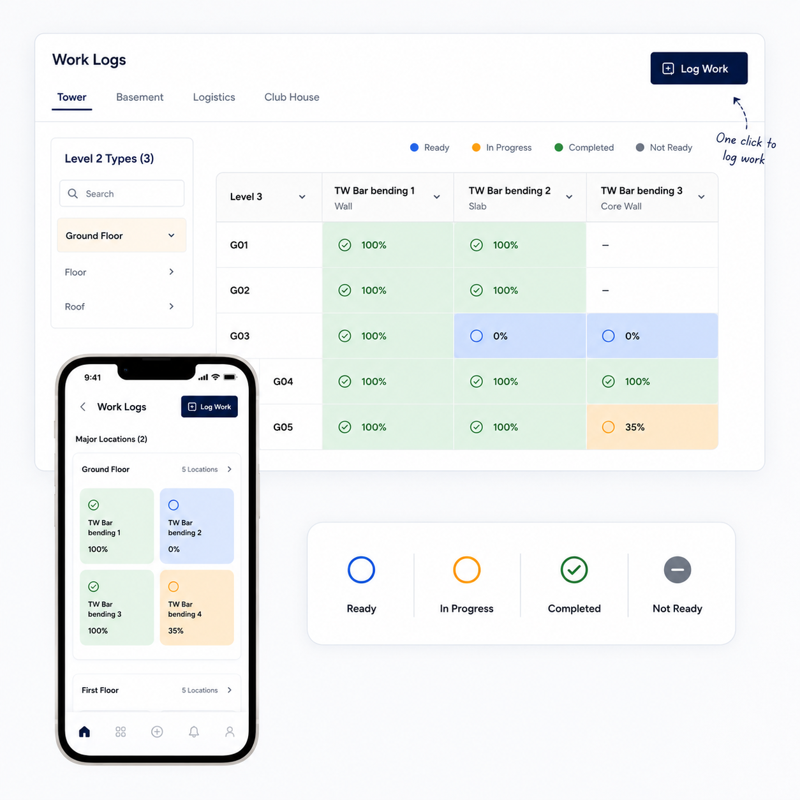
Work Breakdown Structure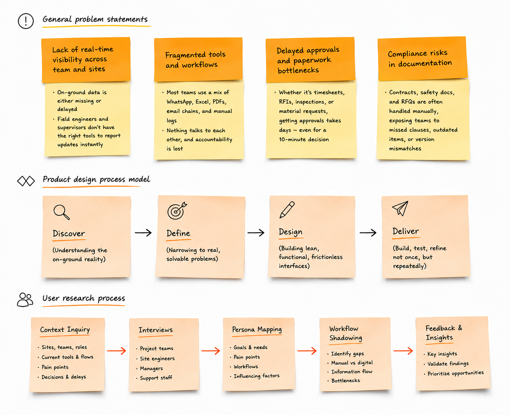
Quality Inspection Logs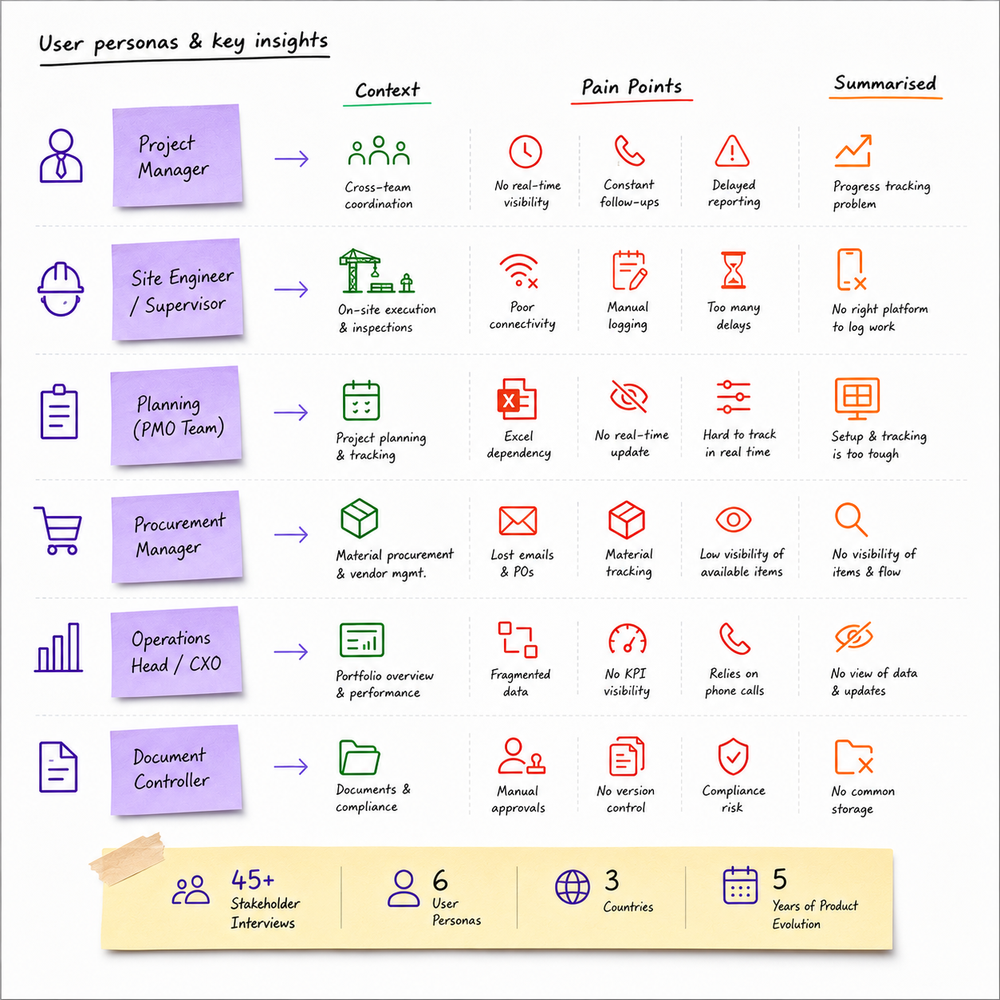
Admin CenterReflections
Five years in construction technology taught me that the best design decisions are not made at a desk - they are made on-site, in conversation with the person who has to use the product under pressure.
A wearable AI device that detects lung diseases through breath sounds - built-in stethoscope, Google ML model, mobile app. Built in 2020. Patent published in India.
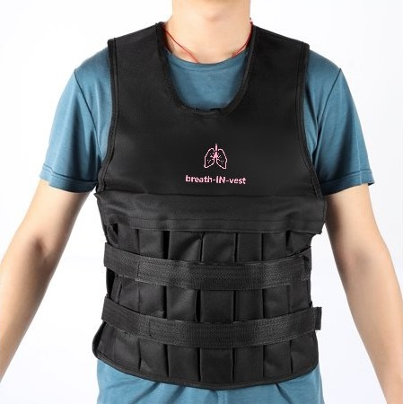
The vest contains a built-in stethoscope that captures lung sounds. Audio feeds through a microphone into a mobile app running Google's open-source ML model - trained to detect wheezes, crackles, and respiratory patterns. The app surfaces a clear result with plain-language next steps.
78% struggled to access care. 65% overly relied on specialists. 52% did not recognize early symptoms - the device needed to catch what users could not.
In-person with patients and healthcare professionals. Key insight: people need results they can understand, not medical jargon. Plain, clear, actionable.
One action per screen. No medical jargon. Colour-coded results with plain-language explanations.No company, no brief, no budget. Just a problem and the determination to solve it with the simplest thing that worked. At 20.
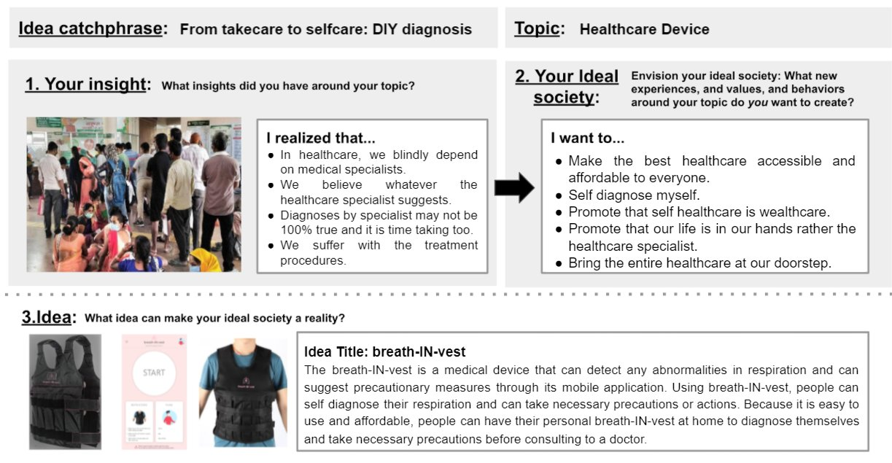
T-Hub Award + App Screen + Research + Japan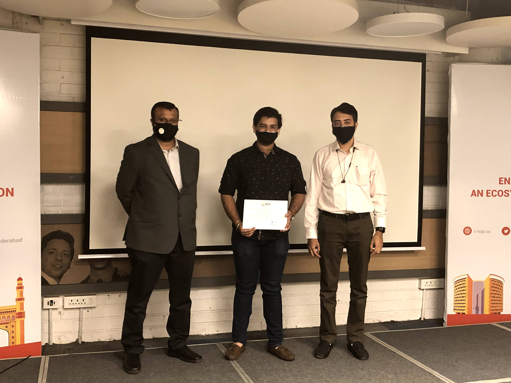
T-Hub Award, Hyderabad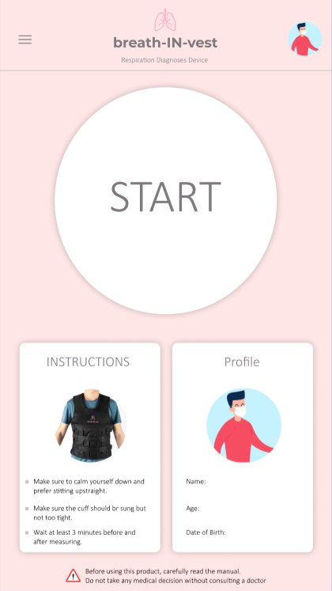
App Start Screen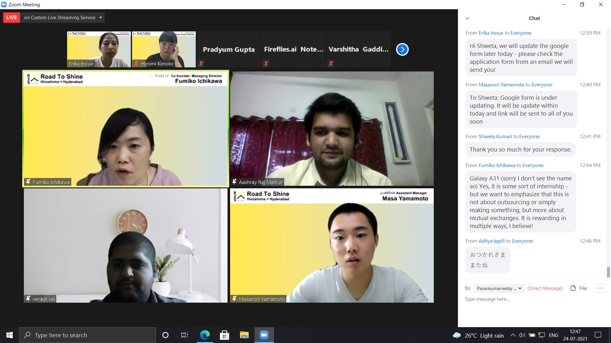
Road to Shine, JapanReflections
This is where my design philosophy was born. I did not have a company behind me, a brief to follow, or a budget. I had a real problem, a 20-year-old's determination, and a belief that the simplest working solution beats the most sophisticated concept. That belief still drives every decision I make today.